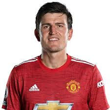
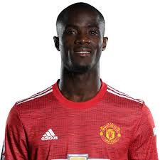
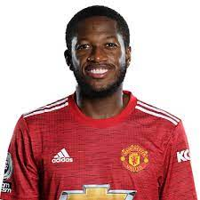
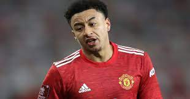

| DATA DIRI | KETERANGAN | FOTO |
| Nama | Dean Henderson |  |
| Tempat/tanggal lahir | 12 March 1997, Whitehaven | |
| posisi | goal keeper | |
| kewarganegaraan | inggris |
| DATA DIRI | KETERANGAN | FOTO |
| Nama | Victor Lindelöf | |
| Tempat/tanggal lahir | Jul 17, 1994 in Västerås, Sweden | |
| posisi | center back | |
| Kewargangaraan | swedia |
| DATA DIRI | KETERANGAN | FOTO |
| Nama | harry maguire |  |
| Tempat/tanggal lahir | 5 March 1993, Sheffield | |
| posisi | center back | |
| Kewargangaraan | inggris |
| DATA DIRI | KETERANGAN | FOTO |
| Nama | Eric Bailly |  |
| Tempat/tanggal lahir | Apr 12, 1994 in Bingerville | |
| posisi | center back | |
| Kewargangaraan | pantai gading |
| DATA DIRI | KETERANGAN | FOTO |
| Nama | Axel Tuanzebe | |
| Tempat/tanggal lahir | 14 November 1997, Bunia | |
| posisi | center back | |
| Kewargangaraan | inggris |
| DATA DIRI | KETERANGAN | FOTO |
| Nama | Phil Jones |  |
| Tempat/tanggal lahir | 21 February 1992, Preston | |
| posisi | centre back | |
| Kewargangaraan | inggris |
| DATA DIRI | KETERANGAN | FOTO |
| Nama | luke shaw | |
| Tempat/tanggal lahir | 12 July 1995,Kingston upon Thames | |
| posisi | left back | |
| Kewargangaraan | inggris |
| DATA DIRI | KETERANGAN | FOTO |
| Nama | alex telles | |
| Tempat/tanggal lahir | 15 December 1992,Caxias do Sul, Brazil | |
| posisi | left back | |
| Kewargangaraan | brazil |
| DATA DIRI | KETERANGAN | FOTO |
| Nama | Aaron Wan-Bissaka | |
| Tempat/tanggal lahir | 26 November 1997, Croydon | |
| posisi | right back | |
| Kewargangaraan | inggris |
| DATA DIRI | KETERANGAN | FOTO |
| Nama | Diogo Dalot |  |
| Tempat/tanggal lahir | 18 March 1999, Braga | |
| posisi | Right-Back | |
| Kewargangaraan | portugal |
| DATA DIRI | KETERANGAN | FOTO |
| Nama | brand william | |
| Tempat/tanggal lahir | September 3, 2000, Manchester | |
| posisi | Right-Back | |
| Kewargangaraan | inggris |
| DATA DIRI | KETERANGAN | FOTO |
| Nama | Nemanja Matic |  |
| Tempat/tanggal lahir | 1 August 1988, Šabac | |
| posisi | midfielder | |
| Kewargangaraan | serbia |
| DATA DIRI | KETERANGAN | FOTO |
| Nama | Paul Pogba | |
| Tempat/tanggal lahir | March 15, 1993, Lagny-sur-Marne | |
| posisi | midfielder | |
| Kewargangaraan | prancis |
| DATA DIRI | KETERANGAN | FOTO |
| Nama | Scott McTominay |  |
| Tempat/tanggal lahir | Dec 8, 1996,Lancaster | |
| posisi | midfielder | |
| Kewargangaraan | skotlandia |
| DATA DIRI | KETERANGAN | FOTO |
| Nama | Donny van de Beek |  |
| Tempat/tanggal lahir | Apr 18, 1997, Nijkerkerveen | |
| posisi | midfielder | |
| Kewargangaraan | belanda |
| DATA DIRI | KETERANGAN | FOTO |
| Nama | Fred |  |
| Tempat/tanggal lahir | 3 October 1993, Belo Horizonte | |
| posisi | midfielder | |
| Kewargangaraan | brazil |
| DATA DIRI | KETERANGAN | FOTO |
| Nama | Jesse Lingard |  |
| Tempat/tanggal lahir | 15 December 1992, Warrington | |
| posisi | winger | |
| Kewargangaraan | inggris |
| DATA DIRI | KETERANGAN | FOTO |
| Nama | Andreas Pereira | |
| Tempat/tanggal lahir | 1 January 1996, Duffel | |
| posisi | winger | |
| Kewargangaraan | brazil |
| DATA DIRI | KETERANGAN | FOTO |
| Nama | Juan Mata |  |
| Tempat/tanggal lahir | Apr 28, 1988 in Burgos | |
| posisi | midfielder | |
| Kewargangaraan | spanyol |
| DATA DIRI | KETERANGAN | FOTO |
| Nama | Marcus Rashford | |
| Tempat/tanggal lahir | Oct 31, 1997 in Manchester | |
| posisi | striker | |
| Kewargangaraan | inggris |
| DATA DIRI | KETERANGAN | FOTO |
| Nama | Edinson Cavani |  |
| Tempat/tanggal lahir | 14 February, 1987, Salto | |
| posisi | striker | |
| Kewargangaraan | uruguay |